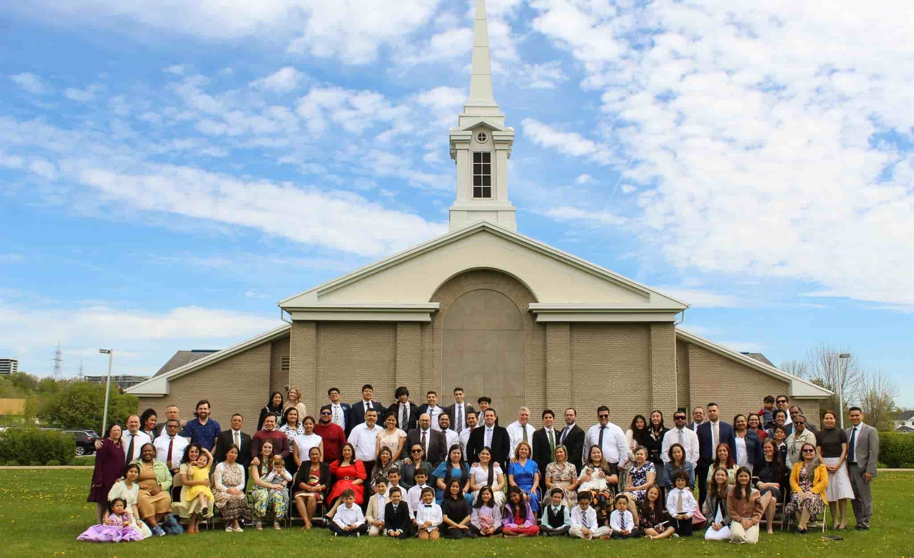

Home

Saint-Larent Spanish Branch
A little About Us
We are an LDS branch named Saint-Laurent located in the City of Quebec Canada, District of Quebec. We are a spanish speaking branch and welcome all visitors who speak spanish learn about our beliefs and develop faith and love for our Heavenly Father and His Son Jesus-Christ. We invite you wherever you may be to come and experience the love and joy the Gospel of Jesus-Christ brings ♡. We welcome you with wide open arms, just like our Heveanly Father welcomes you with His loving arms.
Learn more About us and our Weekly Sacrament Meetings
Current Weather
Weather forecast
Scripture of the day!
Most common questions
- What is the trinity?
- Do you adore saints?
- Does God have a body of flesh and bones?
- Are you christians?